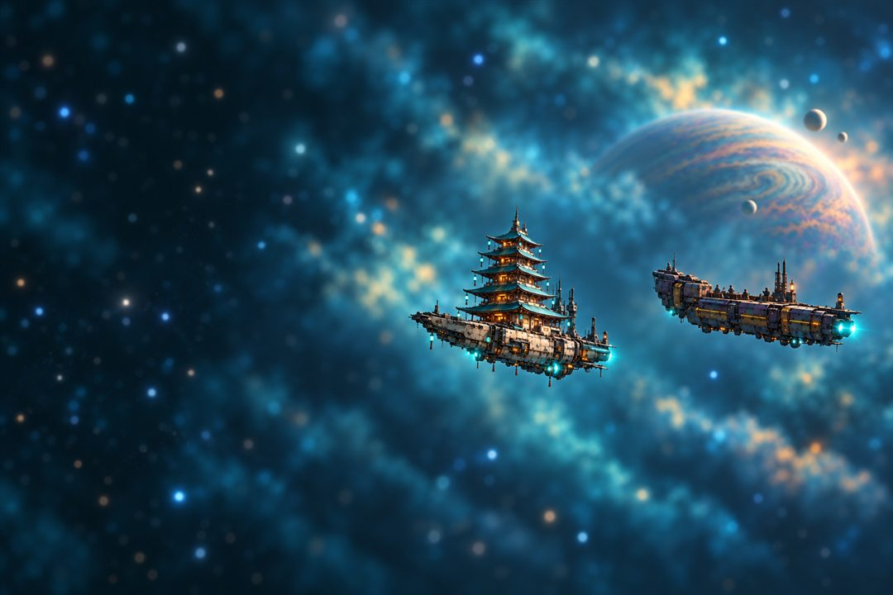

THE_GLOBOIS <CONTROL>
Sanctimonious space monks with glowing energy axes. They don't want to fight you. They want you to think about what you did. Control and denial: Sighs that stop attacks, Auras that shield, and Redactions that blank your best card. Not mad. Just disappointed.
Old Glow · Aura Farmers · Bioluminati · Burnouts · Lil' Glows